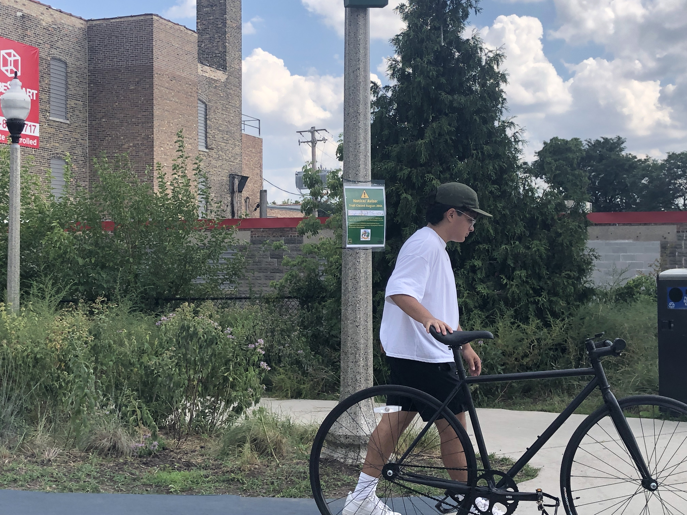

I started playing volleyball in my freshman year of high school. It is kinda weird how I got into it because I watched this show called "Haikyu!". Somewhat embarassing that an animated show is what got me into the sport I play most days of my life. Unfortunately my freshman year season was cut short due to COVID, but I was determined to come back the next year better than ever. So I trained as much as I could during the pandemic and when the next season rolled around, I made the JV team and was named one of the team captains! Now, I am doing my club season with this team called Indigo volleyball club in preparation for the school season in March. I play the libero position which is the only player on the floor that wears a different colored jersey. My position specializes in defense and passing so I am not the one usually spiking the ball.
This is Jenia Grebennikov, my favorite professional volleyball player. He plays in russia for his club team, but represents France in the olympic or other international tournaments. He also plays the libero position just like me!